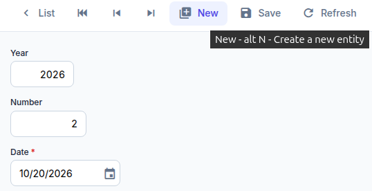
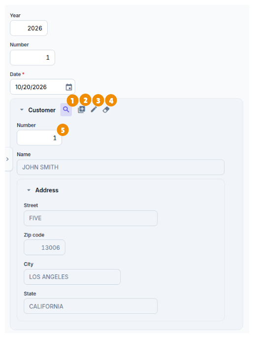
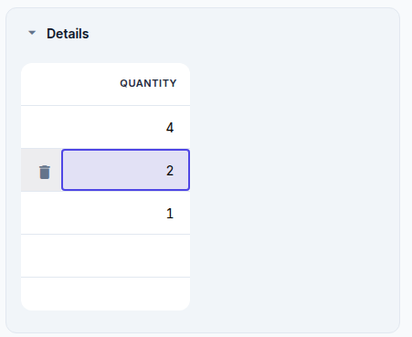
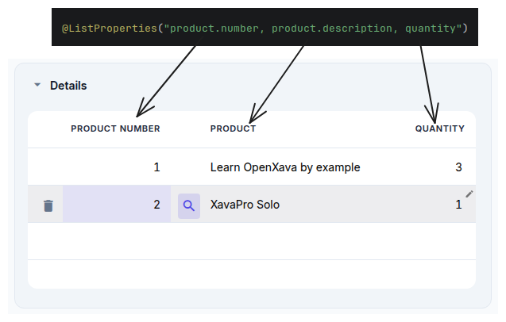
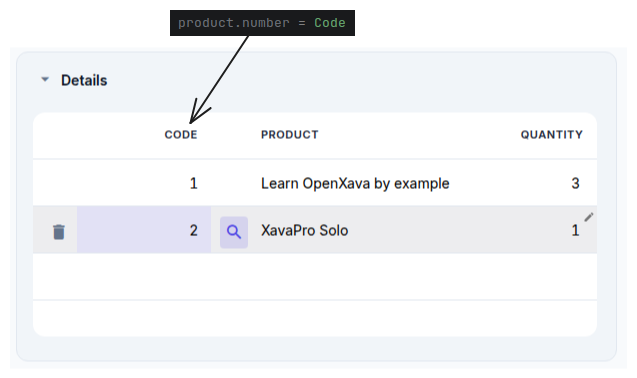

Curso: 1. Primeros pasos | 2. Modelo básico del dominio (1) | 3. Modelo básico del dominio (2) | 4. Refinar la interfaz de usuario | 5. Desarrollo ágil | 6. Herencia de superclases mapeadas | 7. Herencia de entidades | 8. Herencia de vistas | 9. Propiedades Java | 10. Propiedades calculadas | 11. @DefaultValueCalculator en colecciones | 12. @Calculation y totales de colección | 13. @DefaultValueCalculator desde archivo | 14. Evolución del esquema manual | 15. Cálculo de valor por defecto multiusuario | 16. Sincronizar propiedades persistentes y calculadas | 17. Lógica desde la base de datos | 18. Validando con @EntityValidator | 19. Alternativas de validación | 20. Validación al borrar | 21. Anotación Bean Validation propia | 22. Llamada REST desde una validación | 23. Atributos en anotaciones | 24. Refinar el comportamiento predefinido | 25. Comportamiento y lógica de negocio | 26. Referencias y colecciones | A. Arquitectura y filosofía | B. Java Persistence API | C. Anotaciones | D. Pruebas automáticas
En esta lección acabarás de crear todas las entidades necesarias para tu proyecto. Ya tenemos las entidades básicas, ahora vamos a escribir el código para la entidad principal de nuestra aplicación, la entidad Invoice.
Vamos a escribir nuestra entidad Invoice con año, número y fecha. Estaría bien tener valores por defecto para estas propiedades, para que el usuario no tuviera que teclearlos. Esto es fácil de conseguir usando la anotación @DefaultValueCalculator. En esta primera versión de Invoice puedes ver cómo definimos valores por defecto para year y date:
package com.yourcompany.invoicing.model;
import java.time.*;
import jakarta.persistence.*;
import org.openxava.annotations.*;
import org.openxava.calculators.*;
import lombok.*;
@Entity @Getter @Setter
public class Invoice {
@Id
@GeneratedValue(strategy=GenerationType.UUID)
@Hidden
@Column(length=36)
String oid;
@Column(length=4)
@DefaultValueCalculator(CurrentYearCalculator.class) // Año actual
int year;
@Column(length=6)
int number;
@Required
@DefaultValueCalculator(CurrentLocalDateCalculator.class) // Fecha actual
LocalDate date;
@TextArea
String remarks;
}
Crea una entidad Invoice con oid, year, number, date y remarks. Haz que las propiedades en las que sea razonable tengan un valor por defectoAsí cuando el usuario pulse en el botón New el campo para año será el año actual, y el campo para la fecha la fecha actual. Estos dos calculadores (CurrentYearCalculator y CurrentLocalDateCalculator) están incluidos en OpenXava. Explora el paquete org.openxava.calculators para ver otros calculadores predefinidos que pueden serte útiles.
Fíjate que para la fecha usamos el tipo LocalDate (del paquete java.time). Java tiene un tipo Date (en el paquete java.util). Sin embargo Date no es una fecha, sino un momento en el tiempo, incluyendo horas, segundos y milisegundos, mientras que LocalDate tiene simplemente día, mes y año, es decir una fecha. Para el caso de la factura, y para la mayoría en aplicaciones de gestión, usaremos LocalDate en lugar de Date.
A veces necesitas tu propia lógica para calcular el valor por defecto. Por ejemplo, para number queremos sumar uno al último número de factura dentro de este mismo año. Crear tu propio calculador con tu lógica es fácil. Primero, crea un paquete com.yourcompany.invoicing.calculators para los calculadores.
Para crear un paquete nuevo, en la carpeta src/main/java selecciona el paquete com.yourcompany.invoicing y con el botón derecho escoge New > Package. Entonces teclea com.yourcompany.invoicing.calculators como nombre del paquete y pulsa ENTER.
Los paquetes son la forma que tiene Java de organizar el código. Deberías cambiar com.yourcompany por el dominio de tu organización, es decir si trabajas para Telefónica el paquete para los calculadores debería ser es.telefonica.invoicing.calculators.
Ahora crea en él una clase NextNumberForYearCalculator, con el siguiente código:
package com.yourcompany.invoicing.calculators;
import jakarta.persistence.*;
import org.openxava.calculators.*;
import org.openxava.jpa.*;
import lombok.*;
public class NextNumberForYearCalculator implements ICalculator { // Un calculador tiene que implementar ICalculator
@Getter @Setter // Para que sea accesible públicamente
int year; // Este valor se inyectará antes de calcular
public Object calculate() throws Exception { // Hace el cálculo
Query query = XPersistence.getManager() // Una consulta JPA
.createQuery("select max(i.number) from Invoice i where i.year = :year"); // La consulta devuelve
// el número de factura máximo del año indicado
query.setParameter("year", year); // Ponemos el año inyectado como parámetro de la consulta
Integer lastNumber = (Integer) query.getSingleResult();
return lastNumber == null ? 1 : lastNumber + 1; // Devuelve el último número
// de factura del año + 1 o 1 si no hay último número
}
}
Tu calculador tiene que implementar ICalculator (y por lo tanto tener un método calculate()). Declaramos una propiedad year para poner en ella el año del cálculo. Para implementar la lógica usamos una consulta JPA. Repásate el apéndice B sobre JPA. Ahora solo queda anotar la propiedad number en la entidad Invoice:
@Column(length=6)
@DefaultValueCalculator(value=NextNumberForYearCalculator.class,
properties=@PropertyValue(name="year") // Para inyectar el valor de year de Invoice
// en el calculador antes de llamar a calculate()
)
int number;
Crea un calculador personalizado para el valor por defecto de number de Invoice. El número tiene que ser uno más que el último, pero ha de reiniciarse todos los añosNextNumberForYearCalculator está en un paquete distinto al de Invoice, así que has de añadir el siguiente import al principio de Invoice (o simplemente pulsar Alt+Enter sobre el nombre de la clase en IntelliJ):
import com.yourcompany.invoicing.calculators.*;En este caso ves algo nuevo, @PropertyValue. Usándolo, estás diciendo que el valor de la propiedad year en la Invoice actual se moverá a la propiedad year del calculador antes de hacer el cálculo. Ahora cuando el usuario pulse en New el siguiente número de factura disponible para este año estará en el campo. La forma de calcular el número de factura no es la mejor para muchos usuarios concurrentes añadiendo facturas. No te preocupes, lo mejoraremos más adelante.
El efecto visual del calculador para valor por defecto es este. Cuando el usuario pulse en New los campos year, number y date se llenarán con los valores por defecto:

Los valores por defecto son solo los valores iniciales, el usuario los puede cambiar si así lo desea.
Fíjate cómo year y number no son clave, en su lugar usamos una propiedad oid como clave (anotada con @Id). Generalmente usar claves simples es mejor, sin embargo usar claves compuestas también es posible.
Ahora que tenemos todas las propiedades atómicas listas para usar, es hora de añadir relaciones con otras entidades. Empezaremos añadiendo una referencia desde Invoice a Customer, porque una factura sin cliente no parece demasiado útil. Antes de añadir el cliente usa el módulo Invoice para borrar todas las facturas existentes, porque vamos a hacer el cliente obligatorio y esto podría fallar con los datos existentes.
Añade el siguiente código a la entidad Invoice:
@ManyToOne(fetch=FetchType.LAZY, optional=false) // El cliente es obligatorio
Customer customer;
Añade una referencia a Customer en InvoiceNo hace falta más. El módulo Invoice ahora incluye un Customer, con una interfaz de usuario que permite:

No hay más trabajo que hacer aquí. Añadamos una colección de líneas de detalle a Invoice.
Usualmente una factura necesita tener varias líneas con productos, cantidades, etc. Estos detalles son parte de la factura, no son compartidos por otras facturas y cuando una factura se borra sus líneas de detalle son borradas con ella. Por tanto, la forma más natural de modelar los detalles de una factura es usando objetos incrustados. Para hacerlo con JPA declara una colección convencional en Invoice y anótala con @ElementCollection:
@ElementCollection
Collection<Detail> details;
Collection está en el paquete java.util, así que has de añadir el siguiente import al principio de Invoice (o simplemente pulsar Alt+Enter sobre el nombre de la clase en IntelliJ):
import java.util.*;Usando @ElementCollection cuando la factura se borra sus líneas se borran también. Los detalles no se guardan en la base de datos hasta que la factura se guarde y se guardan todos al mismo tiempo.
Para que esta colección funcione necesitas escribir la clase Detail:
package com.yourcompany.invoicing.model;
import jakarta.persistence.*;
import lombok.*;
@Embeddable @Getter @Setter
public class Detail {
int quantity;
@ManyToOne(fetch = FetchType.LAZY, optional = true)
Product product;
}
Fíjate que está anotada con @Embeddable no con @Entity, no puedes definir una @ElementCollection de entidades. Esta clase incrustable puede contener propiedades y referencias, pero no colecciones.
De momento solo tenemos quantity y product, pero es suficiente para tener la Invoice funcionando con details. El usuario puede añadir, editar y borrar elementos de la colección como en una hoja de cálculo:

Este pantallazo enfatiza el hecho de que las propiedades a mostrar por defecto son las propiedades planas, es decir, las propiedades de las referencias no se incluyen por defecto. Esto produce una interfaz de usuario fea para nuestra colección de líneas de factura en nuestro caso, porque solo se muestra la propiedad quantity. Puedes arreglarlo usando @ListProperties, así:
@ElementCollection
@ListProperties("product.number, product.description, quantity")
Collection<Detail> details;
Como puedes ver, solo has de poner como valor para @ListProperties la lista de las propiedades que quieres separadas por comas. Puedes usar propiedades calificadas, es decir, usar la notación del punto para acceder a las propiedades de referencias, tal como product.number y product.description en este caso. El resultado visual es:

Fíjate en que OpenXava genera automáticamente etiquetas adecuadas para las propiedades calificadas, como Product number para product.number. Sin embargo, en las aplicaciones de facturación esta columna se suele llamar Code, así que vamos a cambiarla. Para lograr esto, debemos ir al archivo invoicing-labels_en.properties que se encuentra en la carpeta invoicing/src/main/resources/i18n y añadir la siguiente línea para sobrescribir la etiqueta por defecto que nos trae OpenXava:
product.number = Code
Si tienes el navegador en español, este cambio no tendrá efecto y seguirás viendo Número de producto, porque OpenXava usa las etiquetas del idioma del navegador. En ese caso, crea el archivo invoicing-labels_es.properties en la misma carpeta y añade ahí la etiqueta, por ejemplo product.number = Código.
Esta nueva etiqueta de product.number se cambiará en todos los módulos en que se use. En caso de que quisiéramos aplicarla solamente en la colección details de la entidad Invoice, deberíamos usar la siguiente etiqueta:
# Para esta aplicación usaremos la etiqueta anterior y no la siguiente
Invoice.details.product.number = CodeDe esta manera, podemos personalizar las etiquetas que trae OpenXava o crear nuestras propias etiquetas.
¡Enhorabuena! Has finalizado tus clases del modelo del dominio y tienes una aplicación funcionando. Tus usuarios pueden trabajar con productos, categorías, clientes e incluso crear facturas. En el caso de los productos, categorías y clientes la interfaz de usuario está bastante bien, aunque para Invoice todavía se puede mejorar un poco. Ya has usado algunas anotaciones OpenXava para refinar la presentación, como @DescriptionsList, @NoFrame y @ListProperties, también vimos cómo modificar etiquetas que trae OpenXava por defecto. En la siguiente lección usaremos más anotaciones de este tipo para dar a la interfaz de usuario de Invoice un mejor aspecto sin demasiado esfuerzo.
¿Problemas con la lección? Pregunta en el foro ¿Ha ido bien? Ve a la lección 4